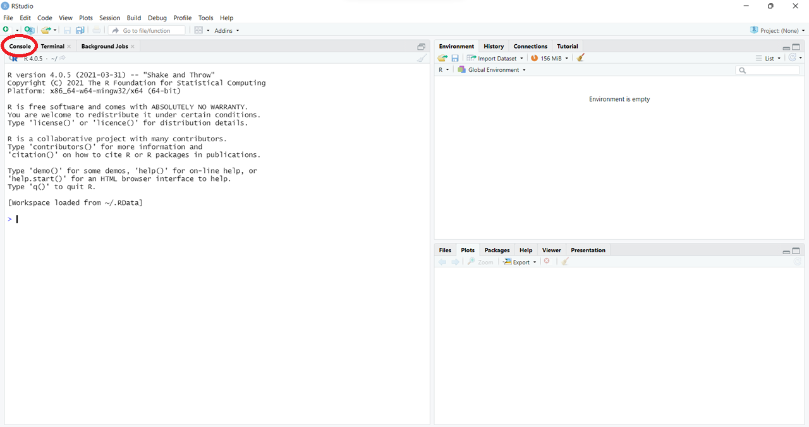
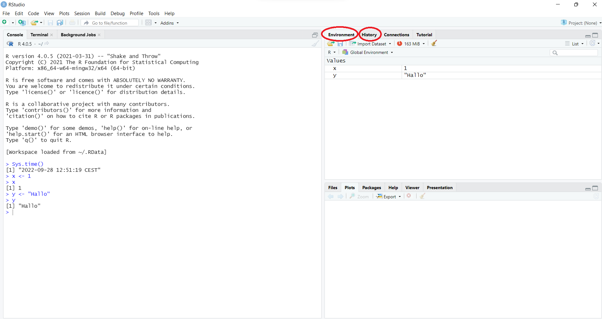
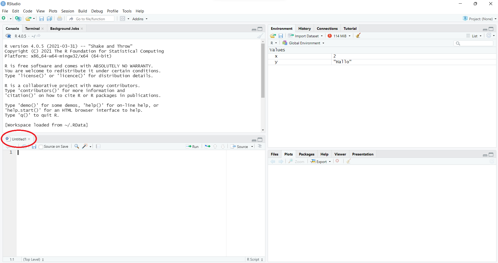

R. Sitzung 1: Einführung und Grundlagen von
RHerzlich willkommen zur Einführung in die politikwissenschaftlichen
Statistik mit R! In der ersten Sitzung werden wir:
R?R ist eine Programmiersprache zur statistischen
Datenanalyse, die in wissenschaftlichen Anwendungen weit verbreitet ist.
Im Vergleich zu anderen Statistikprogrammen hat R den
Vorteil, dass es sich um eine Programmiersprache handelt. Dadurch ist
R sehr flexibel. Außerdem können spezielle Pakete
programmiert werden, die für bestimmte Anwendungszwecke entworfen
wurden. Diese Pakete stellen eine Ergänzung zu R dar. Sie
werden daher immer nur dann geladen, wenn Sie die Pakete auch benötigen.
Inzwischen liegen Pakate für vielfältige Verwendungszwecke vor. Damit
unterscheidet sich R von herkömmlichen Statistikprogrammen
mit einer festen Programmoberfläche wie zum Beispiel Stata. Diese
herkömmlichen Statistikprogramme beinhalten immer nur begrenzte
Anwendungsmöglichkeiten, die durch die Entwicklungsfirma vorgegeben
sind. Zudem werden die Pakete nicht etwa von einer zentralen
Software-Firma entwickelt, sondern von einer Vielzahl von Usern auf der
ganzen Welt. Dadurch profitiert R von der
Schwarmintelligenz. Die Qualitätssicherung obliegt der
R Core Group, indem sie neue Pakete prüft und zulässt. Man
kann sich auch einer Vielzahl von Hilfeforen wie stackoverflow bedienen, welche
Hilfestellung und Lösungen bereitgestellen. Eine Google-Suche kann
ebenfalls häufig weiterhelfen.
Ein weiterer Vorteil, nicht zuletzt für Studierende, ist, dass
R als open source-Programm kostenlos zur Verfügung steht.
Es kann über die Webseite des CRAN (Comprehensive R Archive Network, https://cran.r-project.org/) heruntergeladen werden.
Mittlerweile steht mit RStudio außerdem ein professionelles
Interface zur Verfügung, das die Bedienung deutlich vereinfacht und
kostenlos ist.
Allerdings kommen diese Vorteile nicht ohne einige Nachteile:
R-Code kann auf den ersten Blick recht anspruchsvoll wirken
und ist nicht sonderlich intuitiv. Außerdem ist R
case-sensitive, das bedeutet, dass es zwischen Groß- und Kleinschreibung
unterscheidet und somit keine Tippfehler verzeiht. Wenn etwas nicht
exakt richtig geschrieben ist, kann es zu einer Fehlermeldung oder zu
ungewollten oder unbemerkten Datenmanipulationen kommen. Das Erlernen
von R ist durch eine steile Lernkurve gekennzeichnet. Aber
keine Sorge, wenn Sie etwas nicht auf Anhieb verstehen. Geben Sie nicht
auf, es wird besser!
Ziel dieses Kurses ist, es Ihnen einen Einblick in R zu
geben und Ihnen alle für das Studium der Politikwissenschaft relevanten
Anwendungen der statistischen Datenanalyse zu vermitteln. Der Code, den
Sie dabei kennenlernen, kann Ihnen bei Ihren Haus- und Abschlussarbeiten
helfen. Es ist jedoch unerlässlich, dass Sie ein grundlegendes
Verständnis des Codes und seiner Verwendung haben. Deshalb werden wir
uns insbesondere zu Beginn auf das grundliegende Verständnis von
R-Code konzentrieren.
Um R auf Ihrem Computer nutzen zu können, müssen Sie es
herunterladen und installieren. Besuchen Sie dazu auf https://cran.r-project.org/ und laden Sie die neuste
Version für Ihr Betriebssystem (Windows, MacOS oder Linux) herunter.
Wählen Sie dabei einen Standort, in Ihrer Nähe (z.B. die Universitäten
Göttingen oder Münster, wenn Sie in Hannover sind). Nach der
Installation können Sie R öffnen und verwenden. Probieren
Sie es gerne einmal aus! Für eine optimale Nutzung von R
empfiehlt es sich, RStudio zu installieren. Bitte besuchen
Sie https://www.rstudio.com/products/rstudio/download/ und
laden Sie die kostenlose Version herunter. Beachten Sie, dass Sie
R zuerst und dann RStudio installieren
sollten, da RStudio R voraussetzt.
ConsoleJetzt können wir RStudio öffnen. Dadurch wird
R im Hintergrund ebenfalls geöffnet, allerdings mit einer
vereinfachten Anwenderansicht. Code-Input kann in der
Console ausgeführt werden, welche in RStudio
gewöhnlich auf der linken Seite zu finden ist. Sie erkennen sie am
Fenster unter dem roten Kreis auf dem Bild.

Geben Sie als Beispiel in die Console ein und bestätigen
Sie mit Enter.
Sys.time()## [1] "2024-04-16 11:16:17 CEST"Mit diesem Befehl können Sie das Datum und die Uhrzeit des Systems abrufen. Wie Sie vielleicht bemerkt haben, ist die Funktion bewusst intuitiv gestaltet. Sie können daher versuchen, die Absicht hinter der Bezeichnung der Funktionen zu erahnen.
Haben Sie bemerkt, dass RStudio Ihnen Code-Vorschläge
gemacht hat? Wenn nicht, geben Sie erneut Sys. ein und
schauen Sie, welche weiteren Informationen zum System Sie abrufen
können. Wenn Sie nur Teile von Funktionen eingeben, versucht
RStudio automatisch, diese zu vervollständigen. In der
klassischen Version von R wäre uns das nicht möglich
gewesen.
Jetzt erstellen wir Objekte. Diese speichern Daten in R.
Dabei können wir in R beliebig viele Objekte erstellen und
sie fast beliebig benennen. Ein Objekte besteht aus mindestens einem
Element oder ist leer und enthält kein Element, was allerdings einen
Sonderfall darstellt. Elemente können in Form von zum Beispiel Zahlen
oder Strings vorliegen. Strings sind Zeichen oder Zeichenfolgen, also
Buchstaben oder Wörter. Bei der Zuweisung von Zahlen und Strings wird
der <–-Operator verwendet. Alles, was rechts von
<- steht, wird dem zugewiesen, was links davon steht.
Geben Sie den Code in die Konsole ein und drücken Sie Enter. In diesem
Beispiel weisen wir dem Objekt x das Element 1 zu.
x <- 1Um zu sehen, ob das geklappt hat, lassen wir uns das Objekt
x ausgeben. Das bedeutet wir geben das x in
die Console ein und schicken es mit Enter ab.
x## [1] 1Wie gesagt, geht das nicht nur mit Zahlen, sondern auch mit Strings, also Buchstaben:
y <- "Hallo"
y## [1] "Hallo"Bearbeitungshinweis: Im Verlauf des gesamten Kurses wird der Code in Form von sogenannten Code-Chunks (leicht gräulich hinterlegte Flächen) im Fließtext präsentiert. Die weiß hinterlegten Flächen zeigen den Output. Die Zahlen in eckigen Klammern dienen lediglich als Orientierungshilfen zur Einordnung des Outputs und sind für uns zumeist nicht relevant. Bitte senden Sie die Code-Chunks parallel zur Lektüre ab und überprüfen Sie, ob Sie den gleichen Output erhalten.
Global Environment und HistoryDie Objekte x und y sind im Fenster
Global Environment oben rechts erschienen. Das
Global Environment ist der Ort, an dem R
erstellte Objekte und eingeladene Daten für die Dauer einer
R-Session speichert. Es ist gewissermaßen der Raum, in dem
wir arbeiten - daher das Synonym Workspace - das Ihnen
begegnen wird. RStudio gibt uns mit dem Fenster oben rechts
einen direkten Überblick über alle von uns erstellten Objekte und
verfügbaren Daten. Im Gegensatz dazu können Sie in der
History (dem Reiter rechts daneben) den gesamten Code, den
Sie jemals geschrieben haben - also nicht nur in der aktuellen Session -
nachschlagen. Ihre History enthält im Moment lediglich den
Code zur Erstellung von x und y sowie
Sys.time().

Es ist empfehlenswert, das Global Environment nach
Beendigung einer Session zu leeren, indem man den Workspace
beim Schließen von R nicht speichert.
R Studio wird Sie beim Schließen einer Sitzung danach
fragen. Obwohl dies ungewohnt erscheinen mag, bleiben Änderungen dadurch
nur vorübergehend und das Global Environment wird nicht
dauerhaft verändert. Gleichzeitig ist es natürlich wichtig,
Datenmanipulationen in einer späteren Session wiederholen zu können. Aus
diesem Grund empfiehlt es sich, den Code in einem R Script
zu speichern.
R ScriptÖffnen Sie ein R Script über
File -> New File -> R-Script oder
Strg+Shift+N bzw. Cmd+Shift+N.

Von nun an sollten Sie sämtlichen Code in solchen Skripten schreiben.
Beginnen Sie damit: Lassen Sie uns das bestehende Objekt x
folgendermaßen überschreiben:
x <- 2Wenn wir nun Enter drücken, verändern wir nichts, wir rutschen bloß
in die nächste Codezeile im Skript. Allerdings können wir mit
-> Run (oben rechts über dem Skript) oder
Strg+Enter bzw. Cmd+Enter Codezeilen aus dem
Skript in die Console schicken. Ein Blick ins
Global Environment bestätigt: x wurde der Wert
2 zugeschrieben. Falls es bei Ihnen nicht geklappt haben sollte, stellen
Sie sicher, dass sich der Cursor in der korrekten Zeile befindet.
Skripte speichern also den Code in Textform, damit wir ihn später
wiederverwenden können. Sie sind nicht nur wichtig, um den Code zu
archivieren und zu überprüfen, sondern helfen uns auch die
Replizierbarkeit unserer Analyse zu gewährleisten. Heutzutage verlangen
wissenschaftliche Fachzeitschriften regelmäßig, dass mit dem Manuskript
eines Artikels auch Replikationsmaterial zur Verfügung gestellt wird,
anhand dessen die Analyse nachvollzogen werden kann. Genauso wird
erwartet, dass empirische Arbeiten im Rahmen des Studiums mit
Replikationsmaterial abgegeben werden, damit die dort berichteten
Ergebnisse überprüft werden können. Um dies zu erreichen, müssen wir
unser Skript speichern. Dazu können wir entweder aus
File -> Save As… klicken oder die Tastenkombination
Strg+S bzw. Cmd+S verwenden.
Zusätzlich zu dem R Script (oben links), der
Console (unten links) und dem
Global Environment bzw. der History (oben
rechts) gibt es unten rechts noch ein viertes Fenster. In der Anwendung
sind hier besonders die Reiter Plots, Packages
und Help wichtig. Unter Plots werden in
R erstellte Diagramme angezeigt. Unter
Packages erhalten wir einen Überblick über die
installierten und geladenen Pakete (dazu mehr unter Kapitel 4).
Schließlich können Sie unter Help auf die Reference Manuals
(Bedienungshandbücher) für einzelne Funktionen zugreifen. Geben Sie dazu
einfach den Namen einer Funktion ohne Klammern in die Suchleiste ein.
Alternativ können Sie ein Fragezeichen ? zusammen mit der
Funktion in die Console eingeben oder natürlich über das
Script abschicken:
?table## Help on topic 'table' was found in the following packages:
##
## * base
## * vctrsSchauen Sie sich den Hilfe-Eintrag zur Funktion table()
an, der Ihnen nun angezeigt wird. Die R-Reference Manuals
sind in der Regel wie dieser Eintrag aufgebaut, mit den Punkten
Description, Usage, Arguments usw. Hilfreich sind häufig die
Informationen zu den Argumenten der Funktion, “See Also” zu verwandten
oder alternativen Funktionen sowie insbesondere die “Examples”. Diese
Anwendungsbeispiele helfen sehr dabei, R-Funktionen und
ihre Verwendung zu verstehen.
Wir möchten Ihnen nun einen ersten Einblick in das Kodieren mit
R geben. Dafür ist es wichtig, die Klassen zu kennen, in
denen Objekte vorliegen können. R unterscheidet mehrere
einfache (oder auch atomare) Objektklassen. Davon sind jedoch nur drei
für uns relevant: character, numeric und
logical. Mit der Funktion class() können wir
herausfinden, welcher Klasse die Objekte jeweils angehören.
characters sind Zeichen und Zeichenfolgen und R’s
Darstellungsform von Strings. Sie sind durch Anführungszeichen
"" gekennzeichnet:
class("abc")## [1] "character"numerics sind kontinuierliche Zahlen, also ganze Zahlen wie 1 oder 27 und Dezimalzahlen wie 1,75.
class(1)## [1] "numeric"logicals bezeichnen die logischen wahr-/unwahr-Aussagen
TRUE und FALSE.
class(TRUE)## [1] "logical"Mittels explicit coercion können wir die Klasse der Objekte absichtlich verändern. Klassen können nur dann verändert werden, wenn ausreichend Information vorhanden ist, um die Objekte in anderen Klassen sinnvoll zu definieren. Ein Objekt der Klasse logical können wir sinnvoll als numeric definieren. Hierbei wird den Werten 1 und 0 zugewiesen.
as.numeric(TRUE)## [1] 1as.numeric(FALSE)## [1] 0Logische Werte können wir auch als character definieren.
Dabei wird der entsprechenden Zeichenfolgen der Worte
"TRUE" und "FALSE" zugewiesen.
as.character(TRUE)## [1] "TRUE"as.character(FALSE)## [1] "FALSE"numerics lassen sich zu characters umwandeln, wodurch die Zahlen auf Zeichen reduziert werden.
as.character(1)## [1] "1"as.character(15)## [1] "15"Wir können auch numerics zu logicals umwandeln.
Allerdings geht damit ein großer Informationsverlust einher, weil jede
positive und negative Zahl zu TRUE und 0 zu
FALSE umgewandelt wird.
as.logical(1)## [1] TRUEas.logical(0)## [1] FALSEas.logical(-15)## [1] TRUESchließlich können wir auch character-Objekte zu
numeric umwandeln, wenn es sich dabei um Zahlen handelt.
Sequenzen von oder mit Buchstaben sind hingegen nicht sinnvoll numerisch
zu interpretieren. Entsprechend wird ein NA (für “not
available”) ausgegeben.
as.numeric("1")## [1] 1as.numeric("1a")## Warning: NAs durch Umwandlung erzeugt## [1] NAas.numeric("abc")## Warning: NAs durch Umwandlung erzeugt## [1] NAGenauso ist es nur dann möglich, characters in
logicals umzuwandeln, wenn es sich dabei um die exakt richtig
geschriebenen Zeichenfolgen “TRUE” oder
“FALSE” handelt.
as.logical("TRUE")## [1] TRUEas.logical("TURE")## [1] NAas.logical("1")## [1] NAInsgesamt haben characters die wenigsten Voraussetzungen,
das heißt, dass alles als character ausgedrückt werden kann.
numerics setzen voraus, dass etwas als Zahl ausgedrückt werden
kann. logicals sind schließlich am anspruchvollsten: Sie
erwarten Dichotomie. Demnach kann bei logicals etwas entweder
vorliegen (TRUE) oder nicht vorliegen (FALSE),
mehr ist nicht möglich.
Vektoren sind in R grundlegende Objekte, die dazu
dienen, Zeichenfolgen, Zahlen und logische Werte abzuspeichern. Bei den
oben genannten Beispielen haben wir bereits Vektoren erzeugt. Ein Vektor
kann einen oder mehrere Werte enthalten. Hier ist ein Beispiel für einen
Vektor, der nur eine Zahl enthält: Die eckigen Klammern [1]
kennzeichnen den Output von Vektoren und geben in unserem Beispiel an,
dass 2 der erste und einzige Wert innerhalb des Vektors x
ist.
x <- 2
x## [1] 2Im nächsten Beispiel erstellen wir einen Vektor mit mehreren Werten.
Der Doppelpunkt : ist durch das Wort „bis“ zu übersetzten.
Das heißt, dass alle Zahlen von vier bis 38 im Vektor enthalten
sind.
x <- 4:38
x## [1] 4 5 6 7 8 9 10 11 12 13 14 15 16 17 18 19 20 21 22 23 24 25 26 27 28 29 30 31 32 33 34 35 36 37 38Anhand der eckigen Klammern im Output erkennen wir, dass vier das
erste und 29 das 26. Element innerhalb des Vektors x ist.
Um Vektoren zu bilden und in ihnen mehrere Elemente zusammenzufassen,
bietet sich die Funktion c() (für “combine“) an. Das
bedeutet, dass alles was zwischen den Klammern nach dem c
steht, dem Vektor zugewiesen wird. Vektoren nehmen immer die Klasse der
Objekte an, die in ihnen gespeichert werden:
x <- c(1, 2, 3)
class(x)## [1] "numeric"x <- c("a", "b", "c")
class(x)## [1] "character"x <- c(TRUE, FALSE, TRUE, TRUE, FALSE)
class(x)## [1] "logical"Die Besonderheit der Vektoren besteht darin, dass sie immer nur eine bestimmte Klasse von Objekten beinhalten können. Zum Beispiel können sie nur numerics oder characters enthalten. Wenn wir versuchen, Elemente unterschiedlicher Klassen in einem Vektor zusammenzufassen, werden sie automatisch der weniger anspruchsvollen Klasse zugeordnet.
y <- c(1, "a")
class(y)## [1] "character"y <- c(1, TRUE)
class(y)## [1] "numeric"y <- c("a", TRUE)
class(y)## [1] "character"Dieser Prozess nennt sich implicit coercion (“impliziter
Zwang”) und ist tückisch, weil R keinen Output über die
Veränderung der Klasse ausgibt, obwohl es zu einem Informationsverlust
kommt. Es ist daher wichtig, dass wir über die Klassen von Objekte
Bescheid wissen.
Um einzelne Elemente innerhalb von Vektoren auszuwählen, können wir
die eckigen Klammern [] verwenden. Das ist besonders
praktisch bei längeren Vektoren. Zunächst erstellen wir einen
character-Vektor x, der die ersten acht Buchstaben
des Alphabets enthält. Anschließend können wir ein Element auswählen,
indem wir seine Position innerhalb des Vektors angeben. Hier wählen wir
das dritte Element und danach das vierte bis siebte Element aus.
x <- c("a", "b", "c", "d", "e", "f", "g", "h")
x[3] ## [1] "c"x[4:7] ## [1] "d" "e" "f" "g"Der Befehl c() lässt sich auch hierbei verwenden, zum
Beispiel zur Auswahl des zweiten und fünften Elementes oder um dreimal
das fünfte Element auszuwählen.
x[c(2, 5)] ## [1] "b" "e"x[c(5, 5, 5)] ## [1] "e" "e" "e"Genauso können wir eine negative Auswahl treffen und alles außer den
von uns angegebenen Elementen auswählen. Elemente, die wir nicht
auswählen möchten, versehen wir mit einem Minuszeichen
-.
x[-5] ## [1] "a" "b" "c" "d" "f" "g" "h"x[-c(2, 6)] ## [1] "a" "c" "d" "e" "g" "h"Eine weitere Möglichkeit, um Elemente in Vektoren auszuwählen, ist
die Verwendung von Vergleichen und logischen Operationen. Dies ist
besonders hilfreich bei numerischen Werten. Vergleiche können nur für
numerische Werte durchgeführt werden, da nur Zahlen eine Ordnung
aufweisen. Logische Operationen sowie Gleichungen und Ungleichungen
können für character- und numerische Werte durchgeführt werden.
In der folgenden Tabelle finden Sie eine Übersicht über die Umsetzung in
R.
| Logische Operationen | Umsetzung in R |
Sinnvoll umsetzbar für… |
|---|---|---|
| oder | | |
character, numeric |
| und | & |
character, numeric |
| Gleichungen/Ungleichungen | Umsetzung in R |
Sinnvoll umsetzbar für… |
|---|---|---|
| gleich | == |
character, numeric |
| ungleich | != |
character, numeric |
| Vergleiche | Umsetzung in R |
Sinnvoll umsetzbar für… |
|---|---|---|
| kleiner | < |
numeric |
| größer | > |
numeric |
| kleiner gleich | <= |
numeric |
| größer gleich | >= |
numeric |
Nun definieren wir einen Vektor jahre und führen
verschiedene Gleichungen/Ungleichungen und Vergleiche durch. Zunächst
interessiert uns, welche Elemente mit dem Jahr 2010 übereinstimmen.
jahre <- c(2013, 2005, 1995, 2017, 2021, 1989, 2010, 2018)
jahre == 2010 ## [1] FALSE FALSE FALSE FALSE FALSE FALSE TRUE FALSEJetzt suchen wir nach den Elementen, die kleiner als das Jahr 2010 sind. Also alle Jahre vor 2010.
jahre < 2010 ## [1] FALSE TRUE TRUE FALSE FALSE TRUE FALSE FALSEDie logischen Vektoren, die wir als Output bekommen, sind schwierig zu interpretieren, besonders bei langen Vektoren. Wenn wir wissen möchten, welche konkreten Jahre vor 2010 enthalten sind, schreiben wir:
jahre[jahre < 2010] ## [1] 2005 1995 1989Hier erhalten wir alle Jahre die nicht 2010 sind.
jahre[jahre != 2010] ## [1] 2013 2005 1995 2017 2021 1989 2018Und hier alle Jahre seit 2010. Also alle Jare danach und das Jahr 2010.
jahre[jahre >= 2010]## [1] 2013 2017 2021 2010 2018R wendet den logischen Vektor, der in eckigen Klammern
steht, auf den Vektor jahre an und gibt die Elemente von
jahre aus, die der logische Vektor als TRUE
identifiziert. Elemente, die als FALSE identifiziert
werden, werden ignoriert.
Auch die logischen Operationen & und |
oder können auf numerische Werte übertragen werden. Zum Beispiel, wenn
wir die Jahre 2010 und 2013 erhalten wollen.
jahre[jahre == 2010 | jahre == 2013]## [1] 2013 2010Oder wenn wir die Jahre finden wollen, die zwischen 2013 und 2018 liegen.
jahre[jahre >= 2013 & jahre <= 2018]## [1] 2013 2017 2018Auch für Vektoren, die von der Klasse character sind, können
wir Gleichungen/Ungleichungen und logische Operationen sinnvoll
anwenden. Wenn wir beispielsweise den Vektor namen
betrachten, der verschiedene Vornamen enthält, können wir zunächst nach
den Namen Helena oder Nicole filtern.
namen <- c("Helena", "Philipp", "Jakob", "Julia", "Christoph", "Johannes", "Nicole", "Kerstin")
namen[namen == "Helena" | namen == "Nicole"]## [1] "Helena" "Nicole"Nun wird gefragt, ob ein Element in namen sowohl gleich
“Helena” als auch gleich “Nicole” ist. Da jedes Element nur ein Name
ist, trifft das für kein Element zu.
namen[namen == "Helena" & namen == "Nicole"]## character(0)Jetzt fragen wir, ob ein Element entweder nicht “Helena” oder nicht “Nicole” ist. Da kein Element beides sein kann, trifft das auf jedes Element zu.
namen[namen != "Helena" | namen != "Nicole"]## [1] "Helena" "Philipp" "Jakob" "Julia" "Christoph" "Johannes" "Nicole" "Kerstin"Im nächsten Beispiel fragen wir uns, ob ein Element sowohl nicht “Helena” als auch nicht “Nicole” ist. Das trifft für alle Elemente außer “Helena” und “Nicole” zu.
namen[namen != "Helena" & namen != "Nicole"]## [1] "Philipp" "Jakob" "Julia" "Christoph" "Johannes" "Kerstin"Wenn wir also eine neue Liste àndere` aller Namen, außer Helena und Nicole haben möchten, geht das wie folgt:
andere <- namen[namen != "Helena" & namen != "Nicole"]
andere## [1] "Philipp" "Jakob" "Julia" "Christoph" "Johannes" "Kerstin"Schließlich können wir mit Vektoren auch arithmetische Operationen
durchführen. Das bedeutet, dass wir mit den Grundrechenarten, also
Addition, Subtraktion, Multiplikation und Division, Rechnungen
durchführen können. Dies funktioniert sowohl mit Vektoren, die nur ein
Element enthalten, als auch mit Vektoren, die mehrere Elemente
enthalten. Hier ist ein Beispiel für den Vektor x, der das
Element 2 beinhaltet. Die Grundrechenarten können mit dem Vektor selbst
durchgeführt werden:
x <- 2
x + x## [1] 4Oder mit einer Zahl:
4 - x## [1] 2Oder mit einem anderen Vektor:
y <- 3
x * y## [1] 6Die obigen Rechnungen waren sehr einfach, da der Vektor nur aus einer
Zahl bestand. Wir hätten genauso gut die Zahl 2 bzw. 3 statt den
Vektoren verwenden können. In der Praxis werden die Berechnungen jedoch
meistens für Vektoren mit mehreren Elementen durchgeführt. Der Vorteil
hierbei ist, dass die Rechnung für jedes Element im Vektor durchgeführt
wird, was deutlich effizienter ist, als jedes Element einzeln zu
berechnen. Zum Beispiel wird hier jedes Element des Vektors
x mit der Zahl 2 multipliziert.
x <- 1:4
2 * x## [1] 2 4 6 8Auch für Rechnungen mit dem Vektor selbst funktioniert dieses
Prinzip. So erhalten wir durch die Addition von x zu
x das gleiche Ergebnis wie im vorherigen Beispiel.
x + x## [1] 2 4 6 8Ebenfalls können wir die arithmetischen Operationen mit mehrere
Vektoren, die mehrere Elementen enthalten, durchführen. So können wir
den Vektor y vom Vektor x abziehen. Wichtig
hierbei ist, dass die Vektoren gleich viele Elemente enthalten müssen.
Das heißt, y muss ebenfalls vier Elemente enthalten
y <- c(2, 1, 3, 2)
x - y## [1] -1 1 0 2R verfügt auch über einige Standardfunktionen, die
Berechnungen erleichtern. sqrt() berechnet die
Quadratwurzel.
x <- c(1, 4, 9, 16)
sqrt(x) ## [1] 1 2 3 4Mit der Funktion mean() können wir das arithmetische
Mittel, also den Durchschnitt von einem Vektor bilden.
mean(x) ## [1] 7.5Bislang haben wir Funktionen wie Sys.time(),
c() und class() kennengelernt. Allerdings
haben wir uns aber noch nicht damit beschäftigt, welche Struktur
Funktionen aufweisen und wie sie in R gebildet werden. Dies
wird Inhalt des folgenden Kapitels.
base-R und die Grundstruktur von
FunktionenFunktionen sind Paketen zugeordnet. Sie können immer nur dann verwendet werden, wenn wir das zugehörige Paket installiert und geladen haben. Um herauszufinden, zu welchem Paket eine Funktion gehört, können Sie die Hilfefunktion aufrufen. Das Paket finden wir oben links in geschweiften Klammern hinter dem Namen der Funktion.
?summary| summary | R Documentation |
summary is a generic function used to produce result
summaries of the results of various model fitting functions. The
function invokes particular methods which depend on the
class of the first argument.
summary(object, ...)
## Default S3 method:
summary(object, ..., digits, quantile.type = 7)
## S3 method for class 'data.frame'
summary(object, maxsum = 7,
digits = max(3, getOption("digits")-3), ...)
## S3 method for class 'factor'
summary(object, maxsum = 100, ...)
## S3 method for class 'matrix'
summary(object, ...)
## S3 method for class 'summaryDefault'
format(x, digits = max(3L, getOption("digits") - 3L), ...)
## S3 method for class 'summaryDefault'
print(x, digits = max(3L, getOption("digits") - 3L), ...)
object
|
an object for which a summary is desired. |
x
|
a result of the default method of |
maxsum
|
integer, indicating how many levels should be shown for
|
digits
|
integer, used for number formatting with |
quantile.type
|
integer code used in |
…
|
additional arguments affecting the summary produced. |
For factors, the frequency of the first maxsum -
1 most frequent levels is shown, and the less frequent levels are
summarized in “(Others)” (resulting in at most
maxsum frequencies).
The functions summary.lm and summary.glm are
examples of particular methods which summarize the results produced by
lm and glm.
The form of the value returned by summary depends on the
class of its argument. See the documentation of the particular methods
for details of what is produced by that method.
The default method returns an object of class c(“summaryDefault”,
“table”) which has specialized format and
print methods. The factor method returns an
integer vector.
The matrix and data frame methods return a matrix of class
“table”, obtained by applying summary to each
column and collating the results.
Chambers, J. M. and Hastie, T. J. (1992) Statistical Models in S. Wadsworth & Brooks/Cole.
anova, summary.glm, summary.lm.
summary(attenu, digits = 4) #-> summary.data.frame(...), default precision summary(attenu $ station, maxsum = 20) #-> summary.factor(...) lst <- unclass(attenu$station) > 20 # logical with NAs ## summary.default() for logicals -- different from *.factor: summary(lst) summary(as.factor(lst))
Die Funktion summary() gehört zum Paket
base. Dieses Paket ist das Ursprungspaket von
R und wird gemeinsam mit R installiert. Es
beinhaltet grundlegende Funktionen, die für eine erfolgreiche
Datenanalyse unerlässlich sind. Für spezialisiertere Anwendungen müssen
jedoch besondere Pakete installiert werden.
Funktionen besitzen Argumente, die wir spezifizieren können oder zum
Teil müssen. Dadurch bestimmen wir, worauf sich die Funktion bezieht und
wie genau sie ausgeführt werden soll. Argumente stehen innerhalb der
Klammern () hinter dem Namen der Funktion und werden
mithilfe des einfachen Gleichheitszeichens = auf einen
bestimmten Wert festgesetzt oder mit Inhalt versehen. In etwa so:
Funktion(Argument1 = a, Argument2 = b).
Manche Argumente müssen explizit spezifiziert werden, während andere
mit einer Standardeinstellung, dem default, versehen sind.
R erzeugt eine Fehlermeldung, wenn obligatorische Argumente
nicht bestimmt wurden.
summary(object = ) summary(object = jahre) | Min. | 1st Qu. | Median | Mean | 3rd Qu. | Max. |
|---|---|---|---|---|---|
| 1989 | 2002.5 | 2011.5 | 2008.5 | 2017.25 | 2021 |
Außerdem müssen Sie Argumente nicht ausdrücklich nennen. Da sie eine feste Reihenfolge haben, reicht es aus, wenn Sie in der richtigen Reihenfolge sinnvoll interpretierbaren Input in die Klammern des Befehls schreiben. Insbesondere bei Funktionen mit nur einem Argument können Sie sich in der Regel die Nennung des Arguments sparen.
summary(jahre)| Min. | 1st Qu. | Median | Mean | 3rd Qu. | Max. |
|---|---|---|---|---|---|
| 1989 | 2002.5 | 2011.5 | 2008.5 | 2017.25 | 2021 |
RStudio geht uns zur Hand, indem es die Argumente einer
Funktion vorschlägt, wenn wir uns mit dem Cursor innerhalb der Klammern
einer Funktion befinden und Tab drücken. So muss man nicht
die Argumente unterschiedlicher Funktionen im Kopf haben.
Als Beispiel für ein spezialisiertes Paket möchten wir nun das Paket
ggplot2 vorstellen, welchem wir bei dem Erstellen von
Grafiken wieder begegnen werden. Um ein Paket zu installieren, nutzen
wir den Befehl install.packages(), wobei das Paket in
Anführungszeichen "" gesetzt wird.
install.packages("ggplot2")Nun haben wir ggplot2 erfolgreich auf unserem Computer
installiert. Überprüfen Sie im Fenster rechts unten unter Packages, ob
Sie es finden können. Um ggplot2 nutzen zu können, müssen
wir es noch laden. Dazu verwenden wir die Funktion
library(). Sie finden unter Packages die Bezeichnung
System Library für den Ort, an dem alle Pakete gespeichert
sind.
library(ggplot2)Jetzt ist das Paket geladen und wir können auf seine Funktionen
zugreifen. Wenn Sie es nochmal unter Packages suchen, werden Sie
feststellen, dass sich in dem Kästchen links neben dem Paket nun ein
Haken befindet. Alternativ hätten wir das Paket auch laden können, indem
wir den Haken per Mausklick setzen. Die Funktionsweise von
ggplot2 wird in den Sitzungen 5, 7, 8 und 10 für
spezifische Zwecke erläutert.